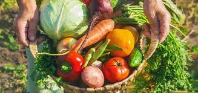

La elaboración de un huerto dentro de las instalaciones está pensado para que
los alumnos puedan acceder a una alimentación balanceada, que puedan consumir alimentos
frescos y puedan aprender conceptos de jardinería. Para ello, se pensó en una página que
calcule el crecimiento y etapa de las plantas según la temperatura diaria y el tipo de
planta, para posteriormente hacer diferentes pedicciones.

Crecimiento y etapa de las plantas según la temperatura
Para empezar, captura los siguientes datos sobre el día
Día 1
Temperatura máxima registrada
Temperatura mínima registrada
Selecciona el tipo de planta del que quieres conocer su etapa de crecimiento
Predicción del tiempo de cosecha según los datos anteriormente recolectados
Se recolectaron datos de un(a):
En el primer mes, está en etapa de:
Tiene un total de:
Con estas predicciones, se puede hacer un aproximado de la fecha de cultivo para prevenirse
sobre las diferentes etapas o estaciones del año, para saber si habrá más lluvias o plagas.